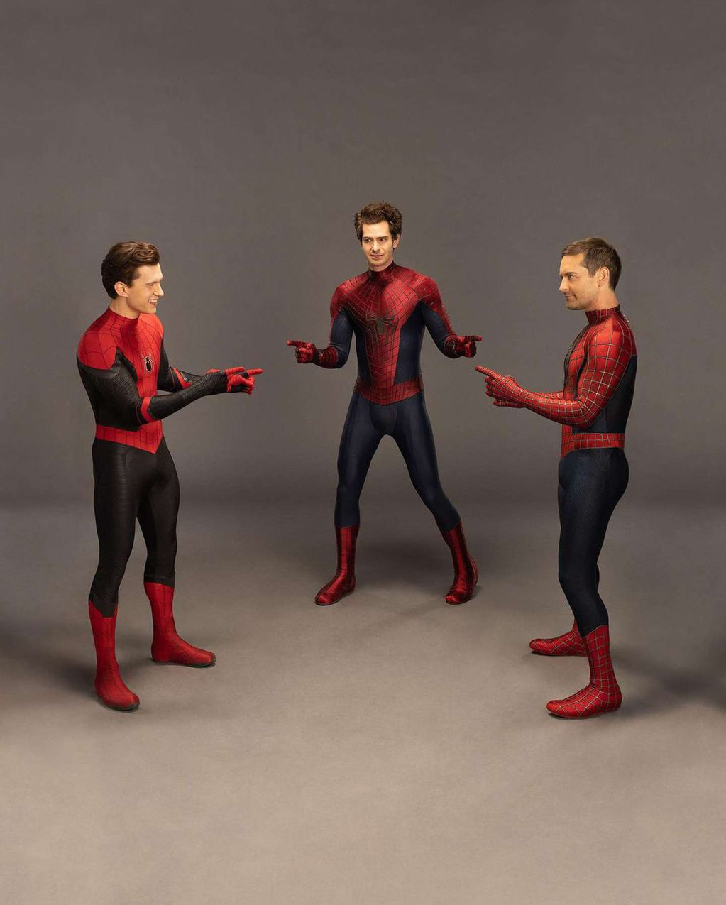

Tobey Maguire
Tu amigable vecino Spiderman
Tu amigable vecino Spiderman
El sorprendente Spiderman
Spiderman UCM
Primer Spiderman.Conoce todo acerca de tu amigable vecino Spiderman interpretado por Tobey Maguire.
Segundo Spiderman.Conoce todo acerca de el sorprendente Spiderman.
Tercer Spiderman.Conoce todo acerca del Spiderman del universo cinematografico de Marvel.
Aqui te dejamos unas fotos de ellos juntos detras de camara y de la cinta.

Un detras de escena de Spiderman No Way Home.
El famoso meme de los dibujos animados fue recreado spiderman en live action.
SPIDER MAN NO WAY HOME.